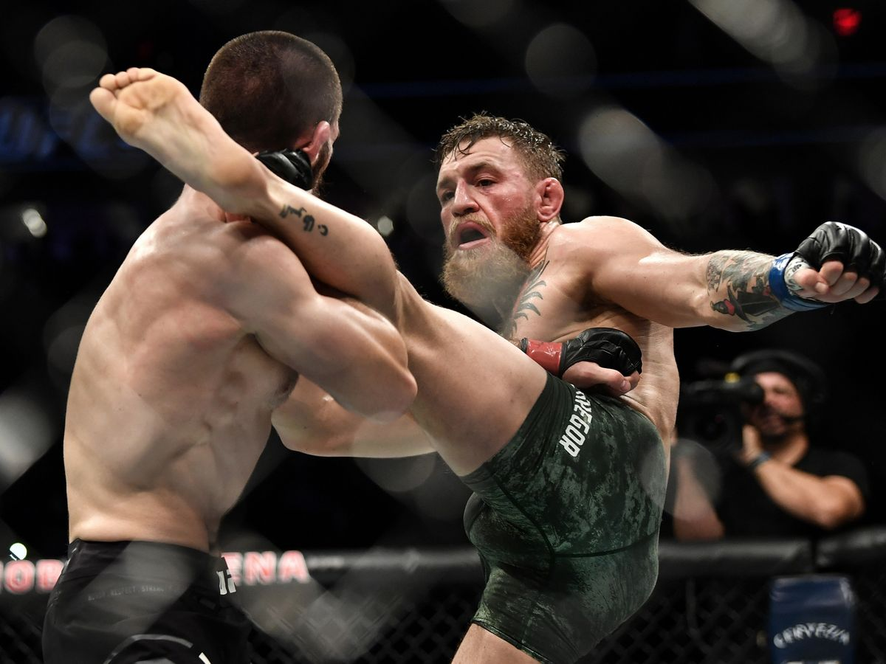
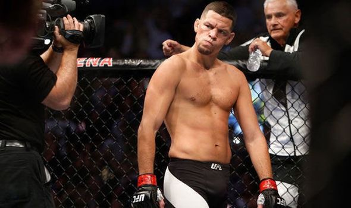
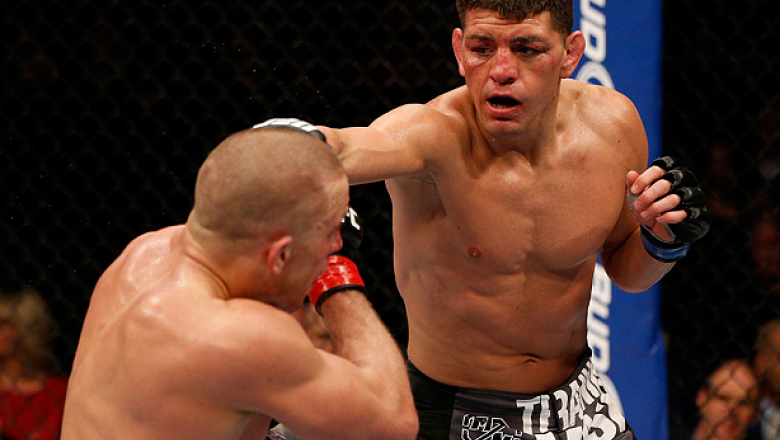
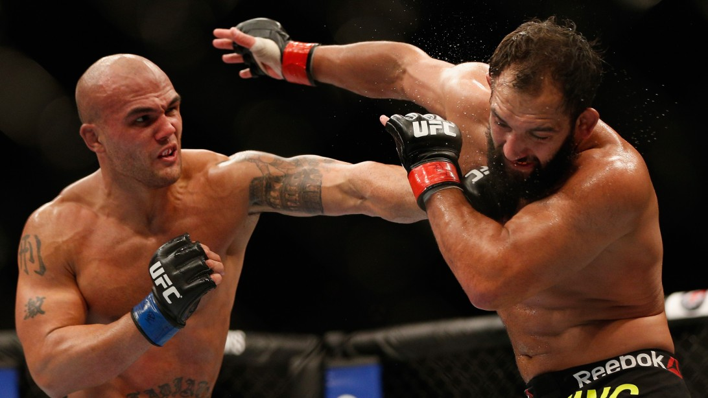

Connor McGregor

McGregor started his MMA career in 2008 and, in 2012, he won both the Cage Warriors Featherweight and
Lightweight Championships, holding both titles simultaneously before vacating them to sign with the UFC.
In 2015, at UFC 194, he defeated José Aldo for the UFC Featherweight Championship via knockout
thirteen seconds into the first round, which is the fastest victory in UFC title fight history.
Nate Diaz

Nathan Donald "Nate" Diaz (born April 16, 1985) is an American professional mixed martial artist
currently signed with the Ultimate Fighting Championship (UFC). Diaz is the younger brother of former
Strikeforce Welterweight Champion and WEC Welterweight Champion, Nick Diaz. Prior to signing with the UFC,
Diaz competed in World Extreme Cagefighting, Strikeforce, and Pancrase.
He has been in the UFC since winning The Ultimate Fighter 5. As of March 27, 2019, he is #14 in
official UFC lightweight rankings.
Nick Diaz

Nickolas Robert "Nick" Diaz (born August 2, 1983) is a retired American mixed martial
artist and promoter, currently signed to the Ultimate Fighting Championship (UFC), currently
on hiatus from fighting. Widely regarded as a pioneer for the sport of MMA and since beginning
his career in 2001, Diaz has competed in UFC, PRIDE, Strikeforce, EliteXC, World Extreme
Cagefighting (WEC), DREAM, and Shooto. He is a former welterweight champion in Strikeforce
and WEC, and is the older brother of Nate Diaz.
Robbie Lawler

Robert Glenn "Robbie" Lawler (born March 20, 1982) is an American professional mixed martial
artist who has been competing since 2001, he is the former UFC Welterweight Champion. Lawler is also a
former EliteXC Middleweight Champion, and has formerly competed in Strikeforce, PRIDE, and the IFL.
He is widely considered one of the most consistently entertaining mixed martial artists currently competing,
being the only fighter to have won three consecutive "Fight of the Year" awards from Sherdog and MMA Fighting.